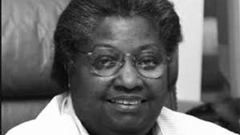

During the 2021–2022 enrollment period, Black women made up 9.4% of women in medical school. This is compared to
8.9% the prior year. Moreover, Black women made up 4.6% (2020–2021), and 4.5% of the total enrollment population,
statistics that have remained relatively stagnant over time. Comparatively, Black women only make up 2% of the
active physician workforce. Numbers inconsistent with the approximately 6.8% of Black women represented in society.
Not only do we need to think about how this harms black women seeking a career in medicine, but also Black women seeking medical treatment too. A growing body of research aims to better understand how and why patient and doctor race can influence care. Studies have shown correlations including a reduction in infant mortality, greater patient adherence to health care guidelines, higher patient satisfaction, and better patient understanding of cancer risks. One recent study found that the life expectancy of Black residents increased in counties with greater percentages of Black primary care physicians. This shows the need for more black female doctors. More black female doctors, means better care for black patients.
ACHIEVEMENTS!
Though black women do struggle alot in the medical field. We should still be aware of all the accomplishments
they've achieved. Look below to see some awesome achievements
Dorothy Lavina Brown, MD
Brown — known to many as “Dr. D.” — was the first Black female surgeon in the American
South. she eventually was made chief of surgery at Nashville's Riverside Hospital. She was also the first African American woman to be made a fellow of the American College of Surgeons.
Jane Cooke Wright, MD
When it comes to Wright, there is no shortage of accomplishments or inspiration! She was
one of the first Black women to graduate from Harvard, as well as the first Black doctor on staff at a
public hospital in New York City. In 1964, she was appointed to the President’s Commission on Heart Disease,
Cancer, and Stroke by President Lyndon Johnson.

Alexa Canady, MD
A graduate of the University of Michigan, Canady became the first Black woman
neurosurgeon in the U.S., in 1981. She went on to specialize in pediatric neurosurgery and was inducted into
the Michigan Women’s Hall of Fame in 1989.
Rebecca Lee Crumpler, MD
Born in 1831, Crumpler was the first Black woman to become a doctor of medicine in the
U.S. Unfortunatley, No known photo of her survives, though many have mistaken other impressive black women
to be crumpler.
Georgia E.L. Patton, MD
Patton was the first Black woman to become licensed as a doctor in Tennessee. Born into
slavery in 1864, she was the only member of her family to graduate high school, and she then went on to earn
her medical degree at the Meharry Medical Department of Central Tennessee College.

Harriet Tubman
Harriet Tubman not only helped hundreds of enslaved people escape to freedom on the
Underground Railroad, but also was a nurse during the Civil War! After the war ended, she started a home for
the elderly in Auburn, New York; it is now part of Harriet Tubman National Historic Park.